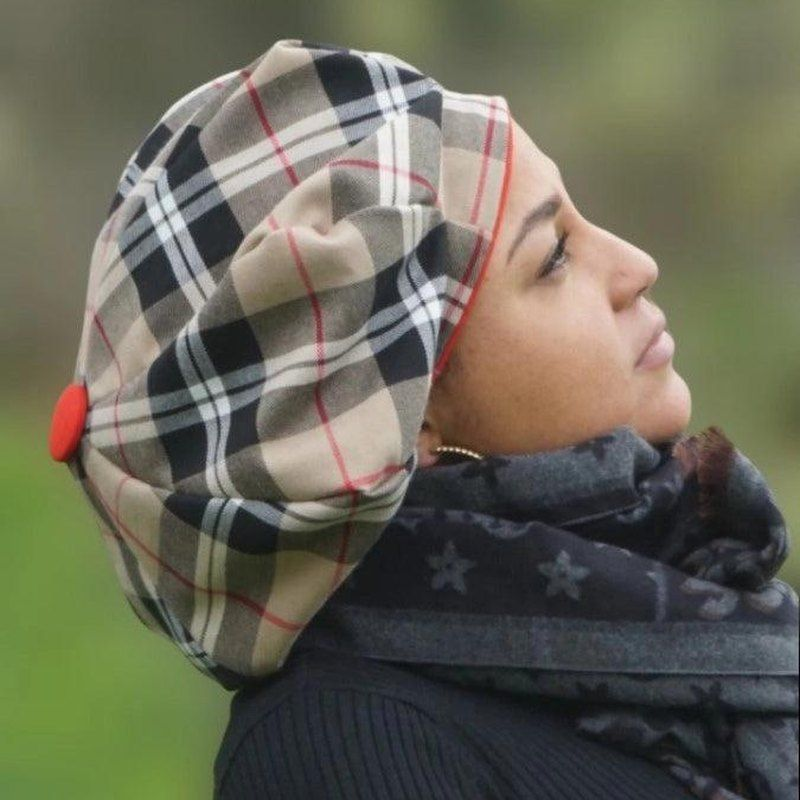
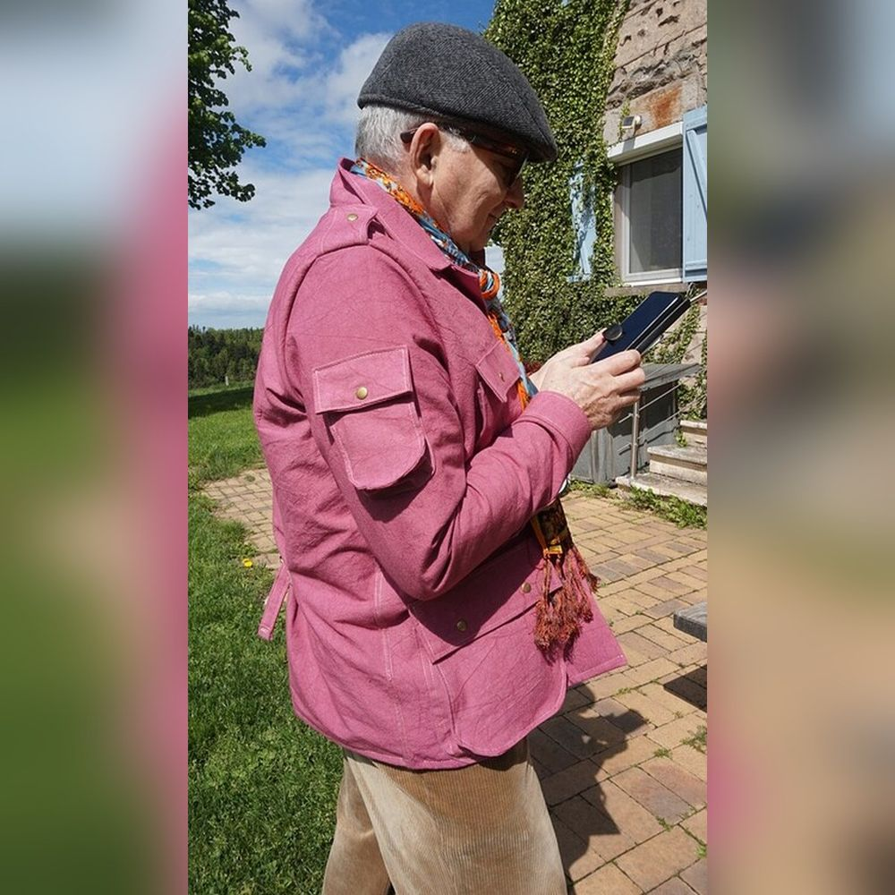
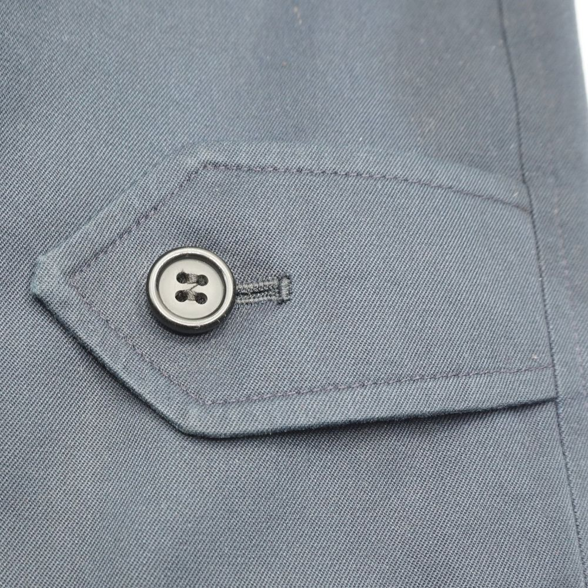
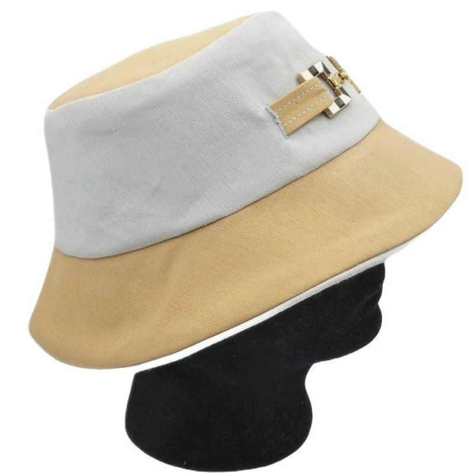
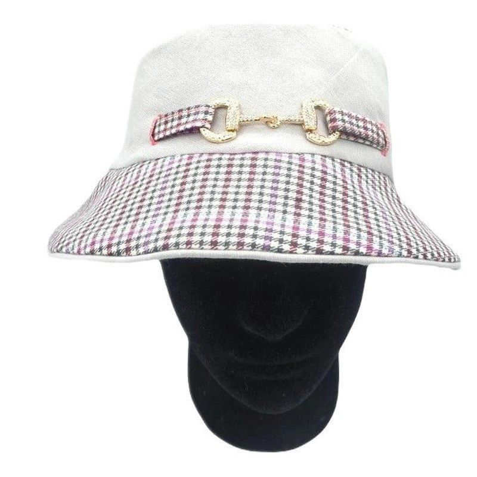
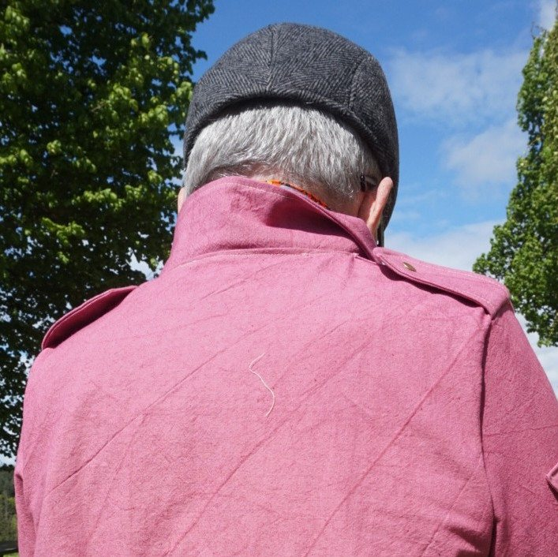
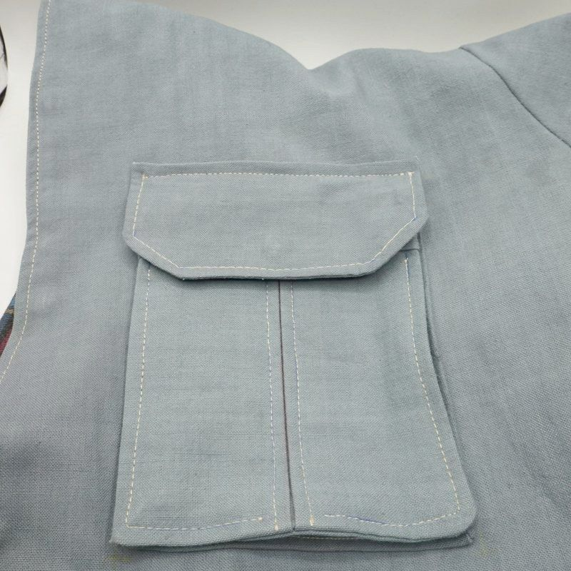

Patrons de couture gratuits
Cousez sur mesure : sahariennes, chapeaux et petits détails de vêtements. Des patrons paramétriques, calculés dans votre navigateur, à imprimer chez vous.
Un site d’amateur, pour les amateurs : gratuit, sans publicité, sans inscription.




NOUVEAU
Béret basque, centré ou asymétrique
Une seule pièce de côté, en forme de virgule, et le béret tombe de lui-même sur le côté. Sur mesure et doublé.
Créer un béret
- 1Choisissez votre patronSaharienne, chapeau, poche, épaulette…
- 2Réglez-le sur mesureEntrez vos mesures, vos options et la marge de couture.
- 3Téléchargez et imprimezPDF A4 à imprimer à 100 %, ou PDF pleine page pour la vidéoprojection.
Choisissez une famille

Sahariennes
Créer une saharienne

Chapeaux
Créer un chapeau

Poches plaquées
Créer une poche

Épaulettes
Créer des épaulettes

Pattes de manches
Créer des pattes de manches

« Cartouchières »
Porte-stylos et lunettes
Voir le patron
Bientôt : d’autres familles de poches (en cours de développement).
Réalisations











Le site en bref
Des patrons paramétriques gratuits : une saharienne sur mesure (simple ou doublée), des chapeaux (bob et bérets) et des détails de vêtements (26 formes de base, toutes paramétrables : poches plaquées (plus de 100 combinaisons avec soufflets, entrées et rabats), épaulettes, pattes de manches, cartouchières). Vous saisissez vos mesures et choisissez vos options : le patron est calculé dans votre navigateur et téléchargé en PDF A4 à l'échelle 1:1, ou en une page pour la vidéoprojection. Un carré de contrôle permet de corriger l'impression si votre imprimante réduit légèrement.